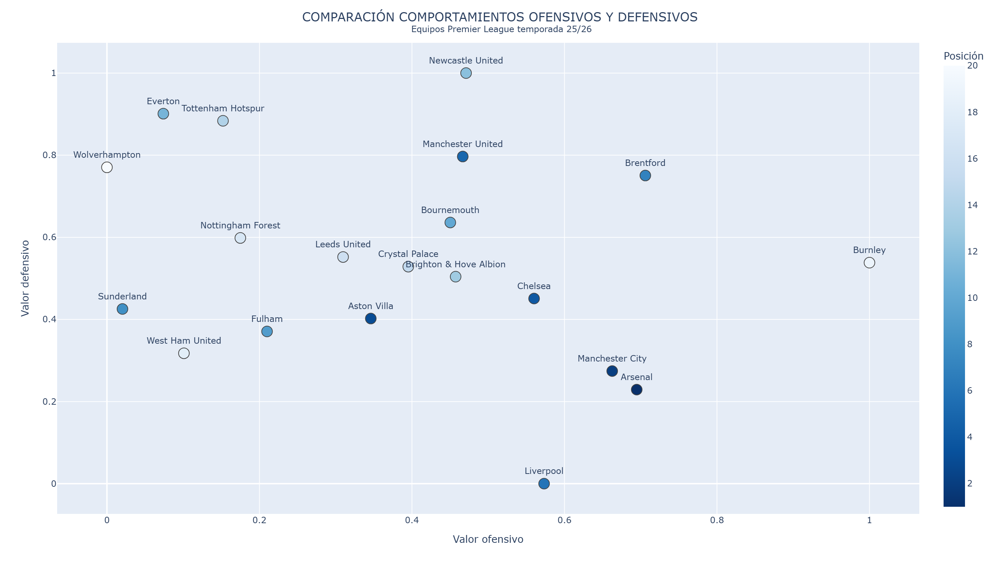
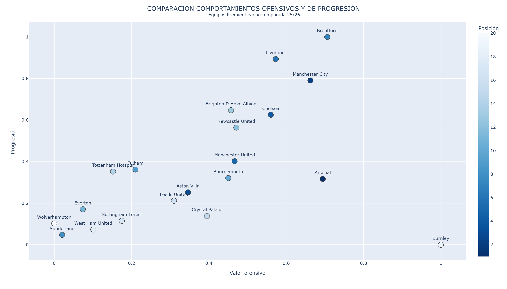
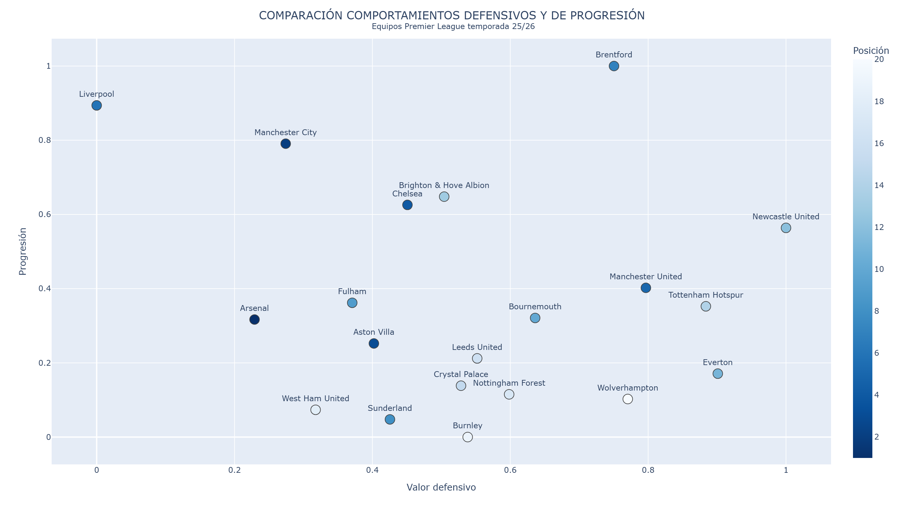
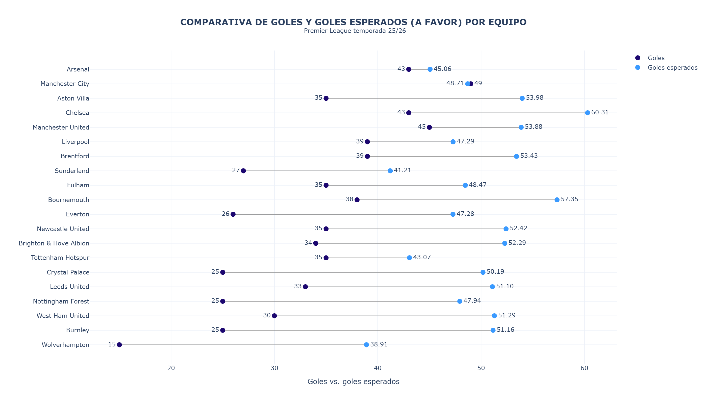
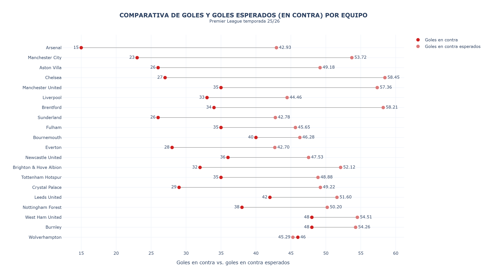

| Posición | Equipo | Índice ofensivo | Índice defensivo | Índice progressión |
|---|---|---|---|---|
| 1 | Arsenal | 3 (224.21) | 19 (4225.1) | 11 (239.59) |
| 2 | Manchester City | 4 (218.32) | 18 (4289.49) | 3 (349.19) |
| 3 | Aston Villa | 12 (160.3) | 15 (4471.74) | 12 (224.66) |
| 4 | Chelsea | 6 (199.54) | 13 (4541.12) | 5 (311.03) |
| 5 | Manchester United | 8 (182.4) | 4 (5033.87) | 7 (259.33) |
| 6 | Liverpool | 5 (201.95) | 20 (3898.87) | 2 (373.04) |
| 7 | Brentford | 2 (226.28) | 6 (4967.98) | 1 (397.58) |
| 8 | Sunderland | 19 (100.62) | 14 (4504.93) | 19 (177.35) |
| 9 | Fulham | 14 (135.37) | 16 (4427.0) | 8 (250.01) |
| 10 | Bournemouth | 10 (179.41) | 7 (4805.01) | 10 (240.56) |
| 11 | Everton | 18 (110.44) | 2 (5182.49) | 14 (205.85) |
| 12 | Newcastle United | 7 (183.2) | 1 (5323.46) | 6 (296.71) |
| 13 | Brighton & Hove Albion | 9 (180.69) | 12 (4617.03) | 4 (316.16) |
| 14 | Tottenham Hotspur | 16 (124.78) | 3 (5157.84) | 9 (247.81) |
| 15 | Crystal Palace | 11 (169.31) | 11 (4651.83) | 15 (198.32) |
| 16 | Leeds United | 13 (153.64) | 9 (4685.24) | 13 (215.35) |
| 17 | Nottingham Forest | 15 (128.95) | 8 (4751.27) | 16 (192.95) |
| 18 | West Ham United | 17 (115.39) | 17 (4351.29) | 18 (183.32) |
| 19 | Burnley | 1 (280.15) | 10 (4665.61) | 20 (166.32) |
| 20 | Wolverhampton | 20 (96.89) | 5 (4996.42) | 17 (190.03) |
| Rango | Jugador | Índice portero | Paradas | Fiabilidad | Control área | Salidas | Creación |
|---|---|---|---|---|---|---|---|
| 1 | Robert Sánchez | 0.768658 | 0.601677 | 0.78826 | 0.815514 | 0.924528 | 0.786164 |
| 2 | Jordan Pickford | 0.762526 | 0.589099 | 0.716981 | 0.792453 | 0.971698 | 0.921384 |
| 3 | Martin Dúbravka | 0.741405 | 0.48847 | 0.805031 | 0.903564 | 0.748428 | 0.798742 |
| 4 | Dean Henderson | 0.722222 | 0.555556 | 0.78826 | 0.890985 | 0.685535 | 0.606918 |
| 5 | Guglielmo Vicario | 0.709906 | 0.494759 | 0.51153 | 0.918239 | 0.927673 | 0.896226 |
| 6 | Robin Roefs | 0.692558 | 0.582809 | 0.599581 | 0.972746 | 0.515723 | 0.764151 |
| 7 | Senne Lammens | 0.673008 | 0.415094 | 0.993711 | 0.78826 | 0.462264 | 0.544025 |
| 8 | David Raya | 0.669497 | 0.209644 | 0.78826 | 0.769392 | 0.968553 | 0.823899 |
| 9 | Caoimhin Kelleher | 0.665042 | 0.333333 | 0.599581 | 0.907757 | 0.732704 | 0.949686 |
| 10 | Nick Pope | 0.61022 | 0.308176 | 0.51153 | 0.834382 | 0.95283 | 0.537736 |
| 11 | Matz Sels | 0.608386 | 0.337526 | 0.716981 | 0.771488 | 0.685535 | 0.490566 |
| 12 | Bernd Leno | 0.603983 | 0.301887 | 0.698113 | 0.656184 | 0.685535 | 0.871069 |
| 13 | Alisson | 0.589203 | 0.18239 | 0.672956 | 0.851153 | 0.603774 | 0.720126 |
| 14 | José Sá | 0.588784 | 0.127883 | 0.993711 | 0.851153 | 0.358491 | 0.418239 |
| 15 | Bart Verbruggen | 0.581971 | 0.530398 | 0.27673 | 0.779874 | 0.584906 | 0.974843 |
| 16 | Gianluigi Donnarumma | 0.578197 | 0.465409 | 0.509434 | 0.461216 | 0.836478 | 0.937107 |
| 17 | Emiliano Martínez | 0.565514 | 0.563941 | 0.377358 | 0.566038 | 0.767296 | 0.735849 |
| 18 | Lucas Perri | 0.54979 | 0.253669 | 0.993711 | 0.681342 | 0.188679 | 0.393082 |
| 19 | Marco Bizot | 0.525472 | 0.255765 | 0.805031 | 0.561845 | 0.603774 | 0.292453 |
| 20 | Alphonse Aréola | 0.508386 | 0.419287 | 0.51153 | 0.907757 | 0.00628931 | 0.477987 |
| Rango | Jugador | Índice defensa | Volumen defensivo | Duelos | Juego aéreo | Salida balón | Fiabilidad |
|---|---|---|---|---|---|---|---|
| 1 | Antonee Robinson | 0.826856 | 0.834793 | 0.687735 | 0.523154 | 0.750104 | 0.911139 |
| 2 | Noussair Mazraoui | 0.807322 | 0.823947 | 0.709011 | 0.472466 | 0.563621 | 0.91239 |
| 3 | Wesley Fofana | 0.800855 | 0.897372 | 0.801627 | 0.555069 | 0.774718 | 0.791823 |
| 4 | Max Alleyne | 0.7903 | 0.628703 | 0.56821 | 0.584481 | 0.507301 | 0.998748 |
| 5 | Ola Aina | 0.782854 | 0.941594 | 0.45995 | 0.520025 | 0.479349 | 0.903212 |
| 6 | Lucas Pires | 0.781008 | 0.852315 | 0.541927 | 0.367334 | 0.724239 | 0.876929 |
| 7 | Malo Gusto | 0.77598 | 0.869837 | 0.622028 | 0.471214 | 0.629537 | 0.844389 |
| 8 | Hugo Bueno | 0.774072 | 0.785148 | 0.773467 | 0.481852 | 0.972883 | 0.759282 |
| 9 | Zach Abbott | 0.769629 | 0.736754 | 0.607009 | 0.612015 | 0.239883 | 0.953275 |
| 10 | Ian Maatsen | 0.768262 | 0.677096 | 0.90363 | 0.497497 | 0.800584 | 0.784731 |
| 11 | Abdukodir Khusanov | 0.765874 | 0.850647 | 0.399875 | 0.394869 | 0.610763 | 0.909887 |
| 12 | James Justin | 0.762182 | 0.662912 | 0.5801 | 0.506258 | 0.51481 | 0.931581 |
| 13 | Joël Veltman | 0.760722 | 0.765957 | 0.624531 | 0.573217 | 0.556946 | 0.85899 |
| 14 | Murillo | 0.759512 | 0.822695 | 0.573842 | 0.502503 | 0.7597 | 0.815603 |
| 15 | Valentino Livramento | 0.75947 | 0.670839 | 0.556946 | 0.415519 | 0.554026 | 0.931164 |
| 16 | Lisandro Martínez | 0.757426 | 0.608678 | 0.559449 | 0.573217 | 0.775553 | 0.891114 |
| 17 | Ethan Ampadu | 0.756446 | 0.876929 | 0.800375 | 0.560075 | 0.823529 | 0.701293 |
| 18 | Nathan Patterson | 0.755163 | 0.619524 | 0.585106 | 0.607009 | 0.373383 | 0.951606 |
| 19 | Chadi Riad | 0.752837 | 0.855236 | 0.185232 | 0.506884 | 0.292866 | 0.998748 |
| 20 | Jarrad Branthwaite | 0.75243 | 0.632457 | 0.453692 | 0.609512 | 0.436796 | 0.967459 |
| Rango | Jugador | Índice centrocampista | Distribución balón | Progressión | Creación ocasiones | Balance defensivo | Retención balón |
|---|---|---|---|---|---|---|---|
| 1 | Declan Rice | 0.847424 | 0.9633 | 0.965993 | 0.908418 | 0.669192 | 0.20303 |
| 2 | Rayan Cherki | 0.829949 | 0.879798 | 0.989562 | 0.978788 | 0.741919 | 0.101684 |
| 3 | Bruno Fernandes | 0.828199 | 0.934007 | 0.839057 | 0.970707 | 0.768182 | 0.158249 |
| 4 | Curtis Jones | 0.827963 | 0.948485 | 0.942424 | 0.717172 | 0.879293 | 0.287205 |
| 5 | Dominik Szoboszlai | 0.808737 | 0.939057 | 0.96431 | 0.749495 | 0.668182 | 0.235354 |
| 6 | Vitaly Janelt | 0.794377 | 0.878451 | 0.790236 | 0.76532 | 0.850505 | 0.46835 |
| 7 | Elliot Anderson | 0.770875 | 0.968687 | 0.884848 | 0.539057 | 0.964646 | 0.0215488 |
| 8 | Adam Wharton | 0.76904 | 0.818519 | 0.860606 | 0.815825 | 0.821717 | 0.241751 |
| 9 | James Garner | 0.768384 | 0.893266 | 0.853199 | 0.675758 | 0.773737 | 0.279125 |
| 10 | Enzo Fernández | 0.761616 | 0.938384 | 0.912121 | 0.805387 | 0.366667 | 0.0609428 |
| 11 | Bruno Guimarães | 0.752256 | 0.913131 | 0.883165 | 0.73064 | 0.59596 | 0.0464646 |
| 12 | Youri Tielemans | 0.750892 | 0.818855 | 0.87037 | 0.790236 | 0.571212 | 0.341077 |
| 13 | Mikkel Damsgaard | 0.749848 | 0.731313 | 0.916835 | 0.913131 | 0.831818 | 0.0814815 |
| 14 | Ryan Gravenberch | 0.745438 | 0.922222 | 0.982492 | 0.484175 | 0.623737 | 0.208418 |
| 15 | Rodri | 0.743098 | 0.757912 | 0.730976 | 0.661279 | 0.937374 | 0.677441 |
| 16 | Bernardo Silva | 0.742256 | 0.869024 | 0.986195 | 0.639057 | 0.494949 | 0.20101 |
| 17 | Lewis Miley | 0.738485 | 0.812795 | 0.896633 | 0.628956 | 0.618182 | 0.46431 |
| 18 | Granit Xhaka | 0.736919 | 0.904377 | 0.791582 | 0.622222 | 0.604545 | 0.319529 |
| 19 | Mateus Fernandes | 0.733283 | 0.847138 | 0.934343 | 0.542761 | 0.800505 | 0.189562 |
| 20 | Jérémy Doku | 0.73234 | 0.745791 | 0.975758 | 0.968013 | 0.424747 | 0.0279461 |
| Rango | Jugador | Índice delantero | Finalización | Creación ocasiones | Amenaza | Sin balón | Eficiencia |
|---|---|---|---|---|---|---|---|
| 1 | Hugo Ekitiké | 0.691654 | 0.773684 | 0.678195 | 0.887594 | 0.503383 | 0.222556 |
| 2 | Erling Haaland | 0.682838 | 0.765038 | 0.647744 | 0.855263 | 0.353759 | 0.321053 |
| 3 | Mateus Mané | 0.669774 | 0.665038 | 0.698872 | 0.768797 | 0.659398 | 0.491729 |
| 4 | João Pedro | 0.662707 | 0.750376 | 0.72406 | 0.757895 | 0.827068 | 0.154135 |
| 5 | Igor Thiago | 0.648195 | 0.762406 | 0.476316 | 0.915038 | 0.554887 | 0.10188 |
| 6 | Florian Wirtz | 0.647801 | 0.581955 | 0.756015 | 0.942857 | 0.580451 | 0.245865 |
| 7 | Matheus Cunha | 0.6375 | 0.543985 | 0.700752 | 0.966917 | 0.640226 | 0.273684 |
| 8 | Richarlison | 0.632744 | 0.678195 | 0.671805 | 0.788346 | 0.514286 | 0.252632 |
| 9 | Leandro Trossard | 0.632688 | 0.558271 | 0.802256 | 0.829699 | 0.634211 | 0.332707 |
| 10 | Amad Diallo | 0.612914 | 0.41203 | 0.76203 | 0.918797 | 0.883083 | 0.399624 |
| 11 | Eli Junior Kroupi | 0.611974 | 0.82406 | 0.278571 | 0.640977 | 0.43797 | 0.389474 |
| 12 | Bukayo Saka | 0.609718 | 0.433835 | 0.81391 | 0.959023 | 0.744737 | 0.247368 |
| 13 | Federico Chiesa | 0.606711 | 0.64812 | 0.757895 | 0.534211 | 0.530451 | 0.491353 |
| 14 | Eberechi Eze | 0.604398 | 0.631203 | 0.658271 | 0.583459 | 0.533459 | 0.537594 |
| 15 | Rio Ngumoha | 0.600921 | 0.769173 | 0.387218 | 0.402256 | 0.365414 | 0.775564 |
| 16 | Dango Ouattara | 0.59594 | 0.584211 | 0.609023 | 0.807519 | 0.816541 | 0.18797 |
| 17 | Anthony Gordon | 0.592293 | 0.434586 | 0.734586 | 0.917669 | 0.617293 | 0.319925 |
| 18 | Ismaïla Sarr | 0.58109 | 0.501128 | 0.590226 | 0.808271 | 0.47782 | 0.440977 |
| 19 | Amine Adli | 0.578083 | 0.571805 | 0.663158 | 0.596992 | 0.740602 | 0.42406 |
| 20 | Dominic Calvert-Lewin | 0.563214 | 0.707143 | 0.546992 | 0.568045 | 0.67594 | 0.15 |




